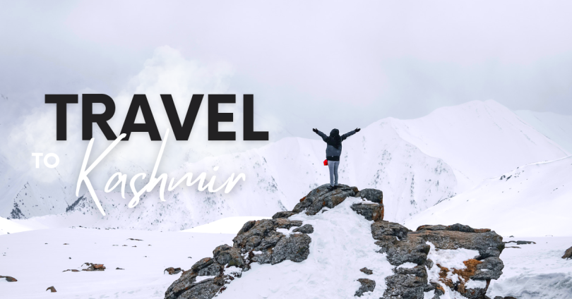
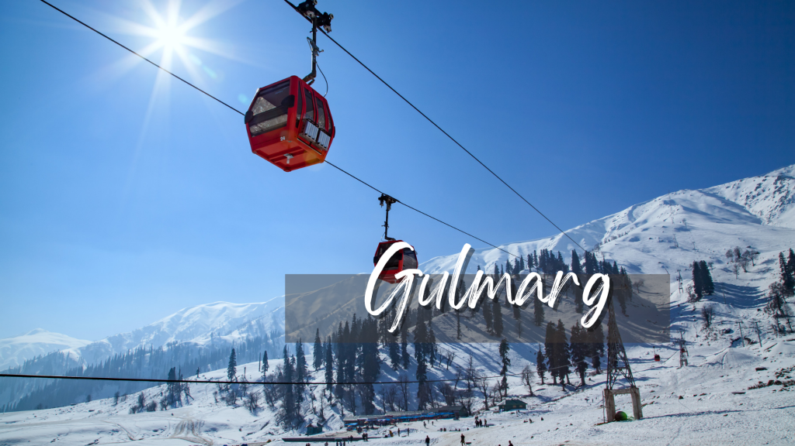
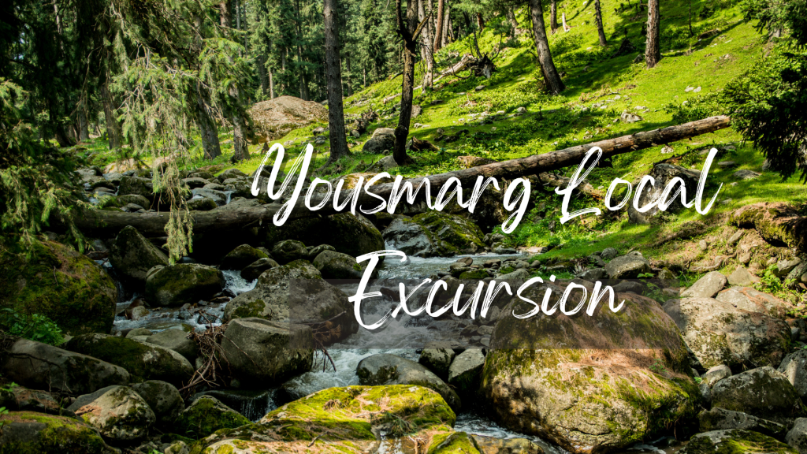

About Me
I am Nasir Amin.I'm passionate about travel and I love sharing my experiences with others. On this blog, you'll find travel tips, destination guides, and stories from my own travels. I hope you enjoy my blog and that it inspires you to explore the diffrent palces in Kashmir.
Welcome to my travel blog!
Best Kashmir Trip Itinerary Here how i was spend 5 days exploring Kashmir
Going to the places, people have always heard of, is something travelers fantasize about a lot. But you can’t just sit there fantasizing about the Kashmir trip instead of planning one! As soon as you start planning, you would think of someone who can draft for you the best Kashmir trip itinerary.
Srinagar Arrival| Shikara Ride

Srinagar is an ideal location to commence your journey to the exquisite Kashmir. It is a great tourist place and offers varieties of things to experience. Other than that the fact that Srinagar can be visited anytime from summer to winter makes it more worthy of being visited.
Gulmarg| Local sightseeing
Gulmarg is a marvelous spot in the Baramulla region of Jammu and Kashmir and is frequently perceived as the “heartland of winter sports in India”. This day can be counted as the most adventurous one for your trip. You can get your hands on several activities within a day.
Pahalgam| Local sightseeing

Pahalgam has to be the next in your Kashmir trip itinerary. This hill station can’t wait anymore for you to see it. With Pahalgam, you will be entering the most breathtaking location of your trip. The holy site of the Amarnath Yatra pilgrimage makes Pahalgam a spiritual place and adds importance to the place.
Yousmarg Local Excursion
And the day comes to explore the hidden gem of our Kashmir Trip, Yousmarg Valley. It is known for its pristine water bodies, green pastures and peaceful environs. So no way to miss this out! However, if the weather turns out to be unfavourable for visiting Yousmarg, need not worry, you can head to Sonmarg. It is another beautiful place to spend your time in.